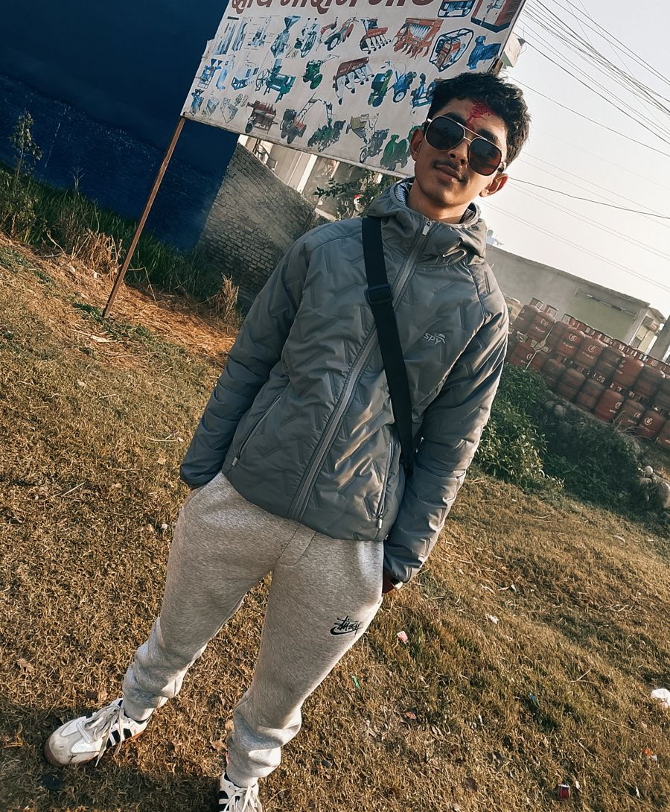

About

I’m Adarsha. Online I go by np_been, or been.
I don’t keep to one hobby. Electronics is where I spend the most time: opening up old boards, reading the markings on the parts, and reusing what still works. Music, writing and stop motion fill the rest.
This site is where I keep photos and clips of what I make.